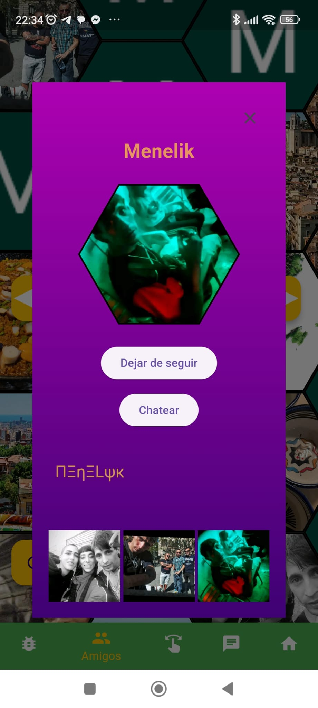
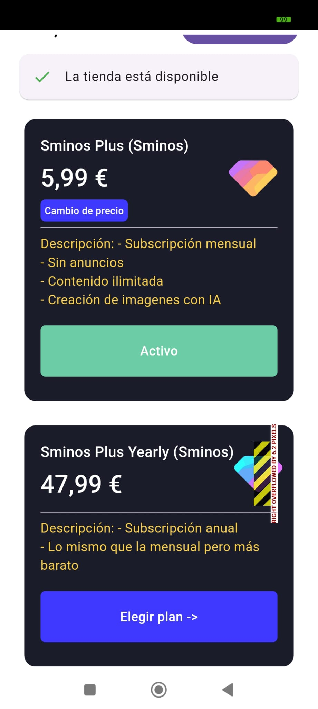

Guía práctica de Sminos
Sminos es una aplicación de redes sociales disponible en Google Play diseñada para compartir imágenes, texto, enlaces y ubicaciones de una forma visualmente única. Lo que la distingue es su enfoque en la presentación de perfiles en un formato de enjambre hexagonal, que hace que la experiencia sea atractiva, intuitiva y diferente a las plataformas tradicionales. A continuación, te detallo todo lo que necesitas saber para empezar a usar Sminos:
Características principales de Sminos
- Diseño de perfiles con hexágonos
- Los perfiles se organizan en un enjambre hexagonal, donde puedes añadir múltiples imágenes.
- Cada imagen que subas se convierte en un hexágono dentro de tu perfil, dándole una estructura visual moderna y atractiva.
- El enjambre no solo refleja tus publicaciones, sino que también te conecta visualmente con otros usuarios de la plataforma.
- Compartir diferentes tipos de contenido
- Puedes compartir más que imágenes:
- Texto para expresarte o dar contexto.
- Enlaces a páginas externas o recursos.
- Ubicaciones para mostrar lugares importantes o interesantes.
- Explorar perfiles de otros usuarios
- Si un perfil llama tu atención en el enjambre, puedes hacer clic para ver más detalles sobre esa persona y explorar su contenido más a fondo.
- Esto fomenta conexiones basadas en intereses compartidos y en lo que cada usuario decide mostrar.
- Interacción con otros usuarios
- Aunque el enfoque principal es el contenido visual y la información que compartes, puedes interactuar con otros perfiles a través del diseño intuitivo de la app.
- Componentes gratuitos y de pago
- Sminos es principalmente gratuita, pero incluye opciones pagadas que pueden mejorar tu experiencia (como funciones premium o ventajas adicionales). Sminos Plus permite navegar sin anuncios, crear imágenes con IA y permite poner más de un tipo de contenido, es decir poner más de 1 texto, poner más de una ubicación o poner más de un enlace.
Cómo empezar a usar Sminos
- Descarga la app
- Ve a Google Play y busca "Sminos". Descárgala e instálala en tu dispositivo Android.
- Crea tu perfil
- Una vez instalada, crea tu cuenta. Podrás configurar tu perfil agregando imágenes, texto y más elementos que representen quién eres.
- Asegúrate de añadir imágenes interesantes, ya que estas formarán los hexágonos de tu enjambre.
- Explora el enjambre global
- Al entrar, encontrarás una red visual de hexágonos que representan perfiles de otros usuarios.
- Explora libremente, conecta con quien te interese y disfruta del contenido.
- Publica contenido
- Comparte imágenes, enlaces, ubicaciones o texto en tu perfil.
- Todo lo que publiques será parte de tu enjambre personal y visible para los demás usuarios.
Consejos para aprovechar al máximo Sminos
- Cuida tu selección de imágenes
- Las imágenes son la base de tu perfil. Subir contenido visual atractivo puede ayudarte a destacar dentro del enjambre.
- Sé estratégico con los enlaces y ubicaciones
- Si compartes enlaces, asegúrate de que sean relevantes para tu audiencia.
- Usa la función de ubicación para destacar lugares interesantes o relacionados con tu vida.
- Explora y conecta
- La plataforma está diseñada para facilitar descubrimientos. No dudes en explorar otros perfiles y conectar con personas que compartan tus intereses.
Cómo usar la aplicación
Una vez iniciada la sesión hay 5 pestañas inferiores:
- Colmena: La primera pestaña inferior hay la colmena con todos los usuarios. En ella hay un botón actualizar en la esquina inferior izquierda para volver a cargar los usuarios del enjambre de forma aleatoria

Los botones a la izquierda y derecha en forma de flecha son para ir a la pantalla de encuesta sobre el emoticono que representa a la emoción de los usuarios en un momento determinado

- Amigos: La segunda pestaña inferior es la de los amigos, similar a la primera pestaña pero aquí sólo se muestran los usuarios que estás siguiendo porque te interesan.

En esta pestaña también hay la encuesta cuando se pulsa en las pestañas laterales pero el porcentaje es solo sobre los usuarios que sigues.
En ambas pestañas (Colmena y Amigos) cuando se apreta sobre un hexágono se muestra el perfil completo de ese usuario.

- Selector: En la tercera pestaña inferior hay un selector para distinguir las imágenes que te gustan de las que no con todas las fotos de todos los usuarios, Si el hexágono se desliza hacia la izquierda significa que no te gusta y si se desliza hacia la derecha significa que te gusta.

- Chat: En la cuarta pestaña inferior hay el Chat, donde se muestra el listado de todos los chats y se puede entrar en cada uno de ellos, en el chat se puede compartir un mensaje de texto, una imagen un video o también un mensaje de voz. Los chats no leídos se marcan en verde

- Cuenta: En la quinta pestaña inferior hay la cuenta, dónde se conigura el perfil para mostrar a otros usuarios y hay las pantallas de configuración. Se muestra el hexágono con las imágenes que ha puesto el usuario cambiando por orden aleatorio. En el botón + que hay debajo del hexágono sirve par agregar contenido a la página del perfil, desde ahí se puede añadir un enlace(para que el enlace con un titulo vaya a su url si otro usuario aprete sobre él. Esto sirve para promocionar algo que el usuario desee proporcionar. También desde el botón más se puede agregar texto para el perfil o una ubicación para dar a conocer una ubicación en particular. En el modo gratuito de Sminos sólo se puede agregar un contenido de cada tipo pero si tienes la versión plus puedes agregar más tipos de cada uno.

También para añadir imágenes en el refil propio hay 3 posibilidades que están representados en los botones flotantes de la esquina inferior derecha.
El botón flotante de abajo ue está a la derecha de color verde es para colgar una imagen de la biblioteca del móvil, el que está a la derecha abajo es para hacer una foto directamente con la Camera. Y el botón que esta arriba de este botón sirve para crear imágenes con inteligencia artificial y sólo está disponible si eres suscriptor de Sminos Plus.
Al agregar una nueva imagen, sea de la manera que sea se puede acompañar de un texto, esta imagen podrá recibir me gustas ya sea con el selector o bien cuando otro usuario interactúe con el perfil.
Apartado opciones:
En la parte superior derecha de esta pestaña (Cuenta) se encuentran 3 puntitos, alulsar sobre ellos se abre un drawer para realizar diferentes configuraciones o obtener cierta información del usuario.

Opciones del lateral de la página Cuenta:
- Actualizar a plus
- En este apartado se puede actualizar a Plus, hay dos tipos de suscripciones, el mensual o el anual, el anual es proporiconalmente más barato.

- Configuraciones
- En este apartado se puede cambiar el Nombre del usuario, el color de fondo degradado superior, el color de fondo del degradado inferior, el color del texto y la velocidad de cambio de imágenes. También es desde dónde el usuario puede eliminar la cuenta si así lo desea.

- ¿Cómo se ve mi perfil?
- En este apartado el usuario puede ver cómo se ve el propio perfil desde la colmena de otros usuarios. No se puede interactuar con uno mismo.
- Puntua y difunde la app
- En este apartado el usuario puede acceder a la play store para puntuar y difundir la app por whatsapp.

- Opciones de idioma
- En este apartado se puede seleccionar el idioma de toda la aplicación. Se puede seleccionar cualquiera de estos idiomas: Español, inglés Frances, portugués, italiano o catalán

- Ayuda
- Este es el apartado dónde e sale la guía de la app y un Agente de voz para resolver cualquier duda.
- Cerrar sesión
- Esté botón sirve para cerrar sesión en la app y salir del modo loguead
FAQ’s
- ¿Qué es lo primero que debo hacer al logarme en esta app?
- Es importante subir fotografías y contenido al proio perfil para garantizar la calidad de la app, en caso contrario los usuarios que no configuren su perfil o hagan un mal uso serán eliminados.
- Si inicio sesión con email en lugar del proveedor de Gmail, ¿Qué debo hacer?
- Es importante que si inicias sesión con correo y contraseña verifiques tu email, en tu perfil se mostrará un botón que dice “verificar email”, que al pulsarlo enviará un correo a tu email para que logres verificarlo. Una cuenta sin verificar no se mostrará en la colmena.
- ¿Cómo subir fotos?
- Pulsa algún botón flotante de la pestaña Cuenta, cómo el de subir desde galería, el de hacer una foto directamente o bien el de crear una imagen con IA (solo disponible en Plus).
- Si estoy suscrito a plus ¿cómo puedo verificarlo?
- Ve al apartado de suscripción y suscribete o si ya lo estás espera que el sistema lo actualice. Si estás teniendo problemas con esto asegúrate de tener la última versión instalada.
- ¿Qué ventajas tiene Sminos Plus?
- Contenido sin anuncios, creación de imágenes con IA y más de un tipo de bloque de contenido para el perfil.
- ¿Quién puede ver mi perfil?
- Todo el mundo que tenga la app, ideal para darte a conocer de forma rápida.
- Recomendaciones
- Tener un buen perfil trabajado en colores, contenido de perfil y imágenes o fotografías.
- Difundir la app.
- Pasarse a Plus para una mejor experiencia sin anuncios y más funcionalidades
- ¿Está disponible para IOS?
- No, todavía no lo está pero no se descarta para el futuro
Descargar la aplicación
Puedes descargar Sminos desde Google Play buscando directamente "Sminos" en la tienda de aplicaciones de tu dispositivo Android.